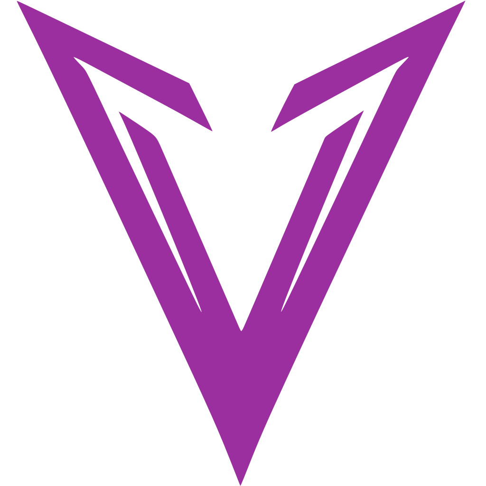

VSlices
PUBLIC INDEX
VSLICES / INDEX
Explorar. Realizar. Revisar.
Una superficie pública para proyectos, experimentos y realizaciones de VSlices. Cada experiencia conserva su repositorio, evidencia y trayectoria.
PLAYGROUND 01
Enactment
Experimenta con decisiones, transiciones y publicaciones condicionadas por evidencia. Abre el laboratorio →